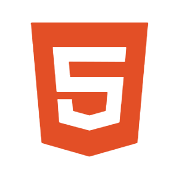
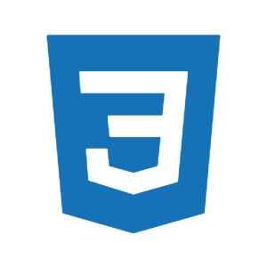
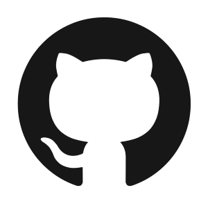

Skills

HTML5

CSS3
JavaScript
Node.Js
React
Tailwind
Figma

GitHub
Vercel
Front-End Developer focado em experiências visuais, interfaces interativas
e identidade digital.
Trabalho na interseção entre design e código, buscando transformar ideias
em produtos claros, funcionais e com personalidade.
HTML5
CSS3
JavaScript
Node.Js
React
Tailwind
Figma
GitHub
Vercel
Você é dev e quer entender como esses projetos são construídos na prática? No canal Sants Coder, eu ensino passo a passo como criar aplicações visuais, animações e microinterações usando HTML, CSS e JavaScript.
A ideia não é só copiar código, mas entender o raciocínio por trás de cada decisão.
Efeito visual animado criado com CSS e JavaScript. Ensino como trabalhar com keyframes, timing e sensação de glitch para criar interfaces mais expressivas.
Animação inspirada no efeito Matrix Rain usando canvas e JavaScript. O foco é lógica, performance e controle visual em tempo real.
Loader animado utilizando apenas CSS. Um microprojeto ideal para entender animações, delays e ritmo visual.